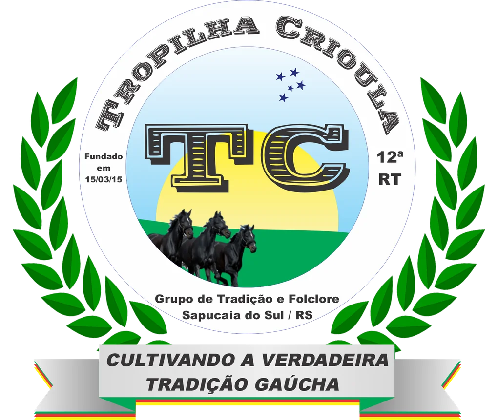
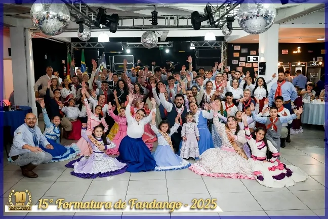
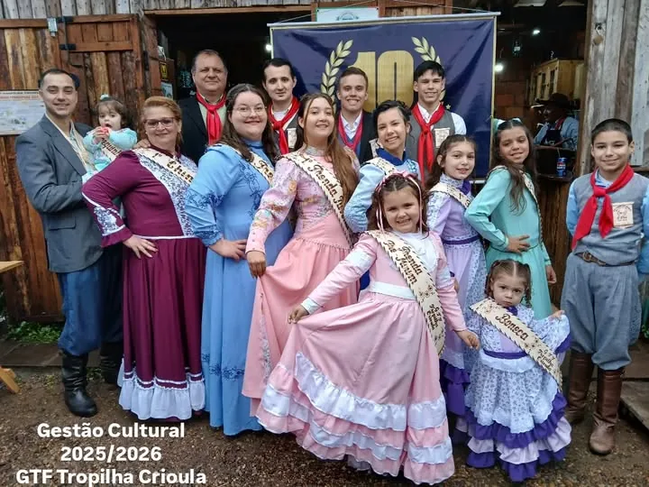
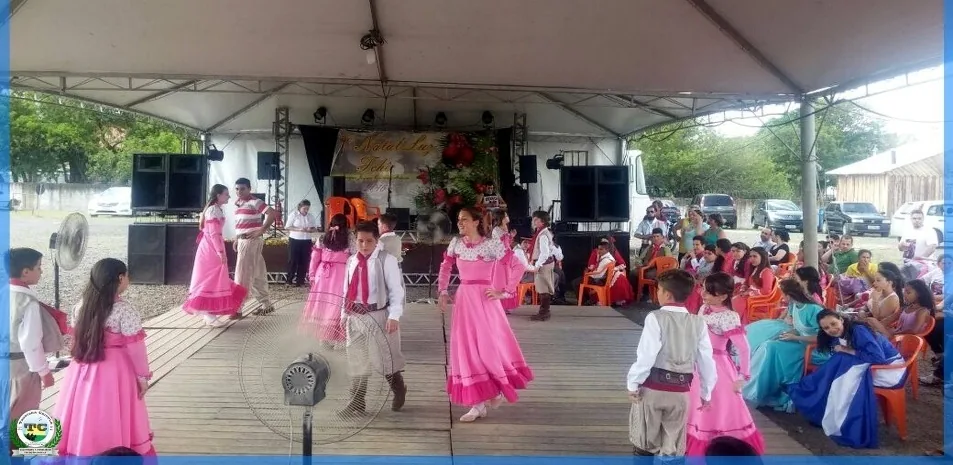

GTF Tropilha Crioula
Tradição que reúne.
Cultura que segue.
Cultivando a verdadeira tradição gaúcha: cultura, educação patrimonial e ação social em Sapucaia do Sul desde 2015.

Nossa essência
Mais que um grupo artístico.
O Grupo de Tradição e Folclore Tropilha Crioula nasceu em 15 de março de 2015, de um grupo de amigos que recusou ver as raízes gaúchas esmorecerem. Sem sede e sem patrimônio, mas com altivez, o Tropilha cresceu e hoje reúne mais de 100 famílias em torno da cultura gaúcha e da solidariedade.
Aqui avós, pais e netos dividem a mesma roda: os mais velhos contam causos, os pequenos aprendem a dançar e todos se descobrem parte da mesma querência cultural.
Leia a nossa história →Em números
Uma trajetória de 2015 a 2026
O que fazemos
Cultura, solidariedade e comunidade
Cultura
Danças, declamação, música e fandango: formação artística gratuita para todas as idades.
Saiba mais →02Ação social
Tropilanche, Natal Solidário, Cobertor e Galeto Solidário levam solidariedade às ruas e aos lares.
Saiba mais →03Comunidade
Escolas, asilos, abrigos e entidades parceiras: a tradição como ponte entre gerações.
Saiba mais →Em destaque
Conheça os nossos projetos
Curso de Fandango
Aulas gratuitas de danças gaúchas de salão, com baile de formatura aberto à comunidade.
Conhecer →Invernadas Artísticas
Pré-Mirim, Mirim, Juvenil e Adulta: ensaios semanais e campeonatos.
Conhecer →Galeto Solidário
Almoço comunitário que financia a ação social e a obra da nossa sede.
Conhecer →Tropilanche
Todo mês, lanches e marmitas quentes para pessoas em situação de rua.
Conhecer →Natal Solidário
Música, dança e presentes para idosos em acolhimento.
Conhecer →Momentos
Tradição em ação




Apoie
Rumo à sede própria
A Prefeitura de Sapucaia do Sul cedeu a área para a construção da nossa sede social. A obra será feita com recursos mobilizados pela própria comunidade, como o Galeto Solidário.
Como ajudarVamos conversar
A comunidade começa
com um encontro.
WhatsApp (51) 98088-1334 · gtftropilhacrioula@gmail.com